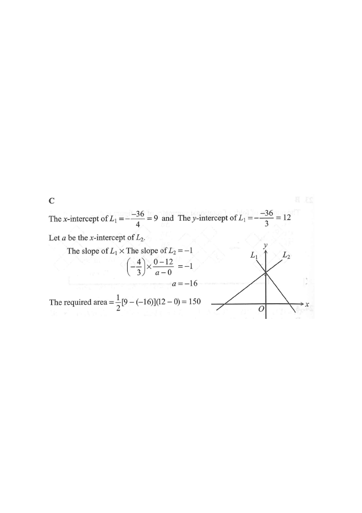

\(L_1: 4x+3y-36=0\)\(L_2\) (perp. to \(L_1\))Points on \(x\)-axisBounded regionIntersection on \(y\)-axis
HKDSE 2018 · Paper 2 · Q26Coordinate GeometryStraight Lines
Question.
The equation of the straight line \(L_1\) is \(4x+3y-36=0\).
The straight line \(L_2\) is perpendicular to \(L_1\) and intersects \(L_1\) at a point lying on the \(y\)-axis. Find the area of the region bounded by \(L_1\), \(L_2\) and the \(x\)-axis.
A. 96B. 108 C. 150D. 192

Figure (original exam diagram)
Intercepts of a Straight Line\(\text{put } y=0\ \text{for the } x\text{-intercept},\quad x=0\ \text{for the } y\text{-intercept}\)In \\(4x+3y-36=0\\) these give \\((9,0)\\) and \\((0,12)\\), the two ends of \\(L_{1}\\).
Step 1 · Find the intercepts of \(L_1\)
Set \(y=0\): \(\;4x-36=0 \Rightarrow x=9\).
Set \(x=0\): \(\;3y-36=0 \Rightarrow y=12\).
So \(L_1\) cuts the \(x\)-axis at \((9,0)\) and the \(y\)-axis at \((0,12)\).
Condition for Perpendicular Lines\(m_{1}m_{2}=-1\)With \\(m_{1}=-\\dfrac{4}{3}\\), the slope of \\(L_{2}\\) is \\(-\\dfrac{1}{m_{1}}=\\dfrac{3}{4}\\).
Step 2 · Slope of \(L_1\) and \(L_2\)
From \(4x+3y-36=0\): \(\;y=-\frac{4}{3}x+12\), so slope of \(L_1=-\frac{4}{3}\).
Since \(L_2\perp L_1\):
\[m_1\times m_2=-1 \Rightarrow \left(-\frac{4}{3}\right)m_2=-1 \Rightarrow m_2=\frac{3}{4}.\]
Step 3 · Equation of \(L_2\)
\(L_2\) meets \(L_1\) on the \(y\)-axis, i.e. at \((0,12)\).
Using slope \(m_2=\frac{3}{4}\) through \((0,12)\):
\[L_2:\; y=\frac{3}{4}x+12.\]
Step 4 · \(x\)-intercept of \(L_2\)
Set \(y=0\): \(\;0=\frac{3}{4}x+12 \Rightarrow x=-16\).
So \(L_2\) cuts the \(x\)-axis at \((-16,0)\).
💡 The two \(x\)-intercepts are \((9,0)\) and \((-16,0)\); the two lines meet at the common vertex \((0,12)\).
Area of a Triangle\(\text{Area}=\dfrac{1}{2}\times\text{base}\times\text{height}\)The bounded region has base \\(9-(-16)=25\\) on the \\(x\\)-axis and height \\(12\\), so the area is \\(150\\).
Step 5 · Area of the bounded region
The region is a triangle with vertices \((9,0)\), \((-16,0)\) and \((0,12)\).
Base along the \(x\)-axis: \(9-(-16)=25\). Height: \(12\).
\[\text{Area}=\frac{1}{2}\times 25\times 12=150.\]
∴ Answer: C. 150
PRACTICESimilar question — try it yourself
Question. The equation of the straight line \\(L_{1}\\) is \\(3x+4y-24=0\\). \\(L_{2}\\) is perpendicular to \\(L_{1}\\) and meets \\(L_{1}\\) on the \\(y\\)-axis. S (\\(a\\)) Find the intercepts of \\(L_{1}\\). (b) Find the \\(x\\)-intercept of \\(L_{2}\\). (c) Find the area of the region bounded by \\(L_{1}\\), \\(L_{2}\\) and the \\(x\\)-axis.
Show the worked solution
Step 1. (a) Put \\(y=0\\): \\(3x=24\\), so \\(x=8\\). Put \\(x=0\\): \\(4y=24\\), so \\(y=6\\). \\(L_{1}\\) cuts the axes at \\((8,0)\\) and \\((0,6)\\).
Step 2. (b) From \\(3x+4y-24=0\\), the slope of \\(L_{1}\\) is \\(-\\dfrac{3}{4}\\), so the slope of \\(L_{2}\\) is \\(\\dfrac{4}{3}\\). As \\(L_{2}\\) passes through \\((0,6)\\), \\(L_{2}\\): \\(y=\\dfrac{4}{3}x+6\\).
Step 3. Put \\(y=0\\) in \\(L_{2}\\): \\(\\dfrac{4}{3}x=-6\\), so \\(x=-4.5\\). The \\(x\\)-intercept is \\((-4.5,0)\\).
Step 4. (c) The triangle has vertices \\((8,0)\\), \\((-4.5,0)\\) and \\((0,6)\\): base \\(=8-(-4.5)=12.5\\), height \\(=6\\), area \\(=\\dfrac{1}{2}(12.5)(6)=37.5\\).